Working comparisons. The list beneath each pair is the authored feature checklist; approval requires the visual match.
Rocket Platform
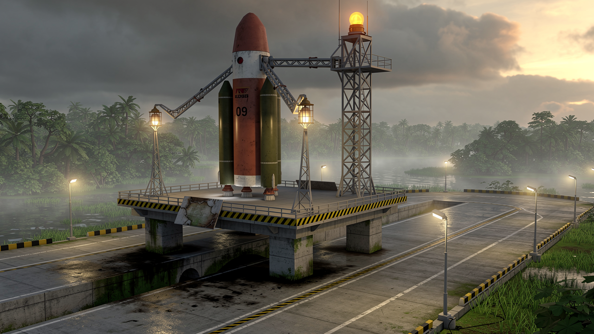
Reference hero
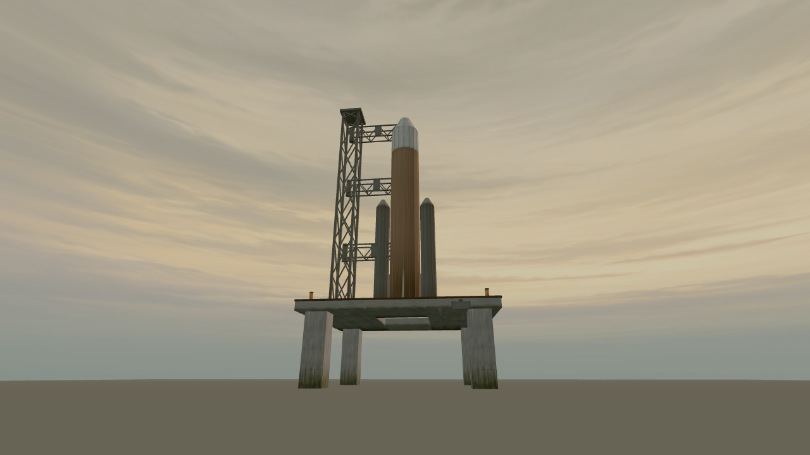
Authored model · shared dawn lighting and fog · camera height 2.4 m
four piers and open exhaust hole
hazard deck rim
open service tower
repair plate
caged lamps and beacon
needs revision: Core colour breakup and service-arm silhouette are much weaker than the hero; the platform reads too sparse. No shuttle wings or copied real logo observed, but original-vehicle acceptance is not established by that alone.
Crawler Transporter
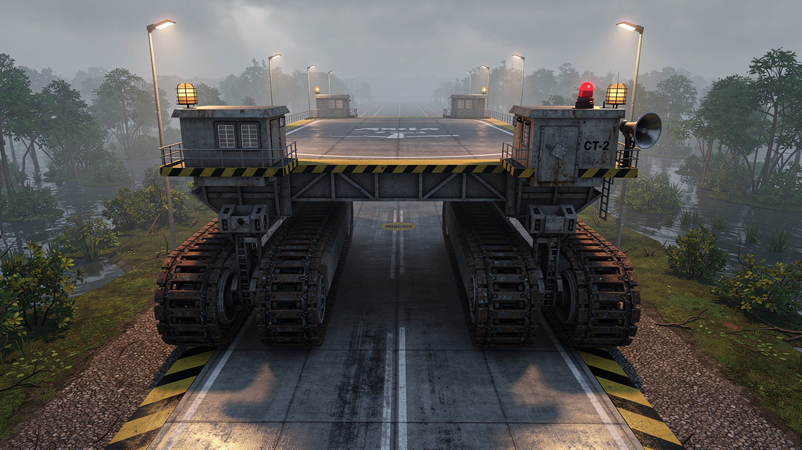
Reference hero
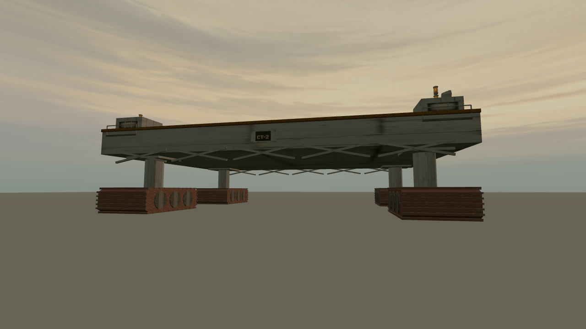
Authored model · shared dawn lighting and fog · camera height 2.4 m
four tread assemblies
four support legs
two corner cabs
hazard deck band and repair plate
beacon and horn
needs revision: Cab mass and tread profiles are too small and simplified against the hero. Component presence does not meet focal fidelity.
Countdown Board
Reference heroAuthored model · shared dawn lighting and fog · camera height 2.4 m
A-frame mast
deep countdown housing
hazard border
beacon and horn
repair plate and cage lamp
needs revision: Single A mast differs from the hero's paired supports. The runtime overhead adaptation is documented separately; repair plate is not clearly visible from this angle.
Trench Wall Module
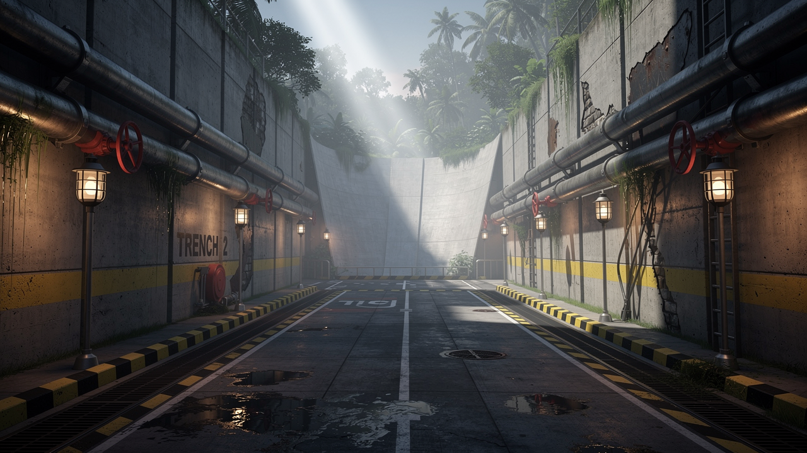
Reference hero
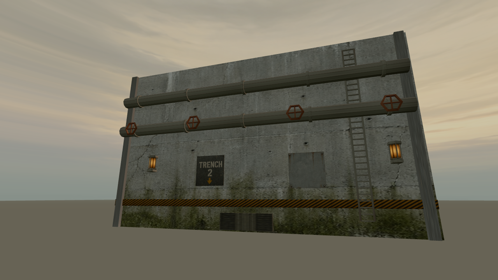
Authored model · shared dawn lighting and fog · camera height 2.4 m
two continuous pipes
four red valve wheels
full-height ladder
caged glass lamps
hazard band repair plate and drain grate
module details visible; corridor acceptance withheld: Repeated bays dominate the long corridor. Hazard band and surface wear are more uniform than the hero.
Deluge Water Tower
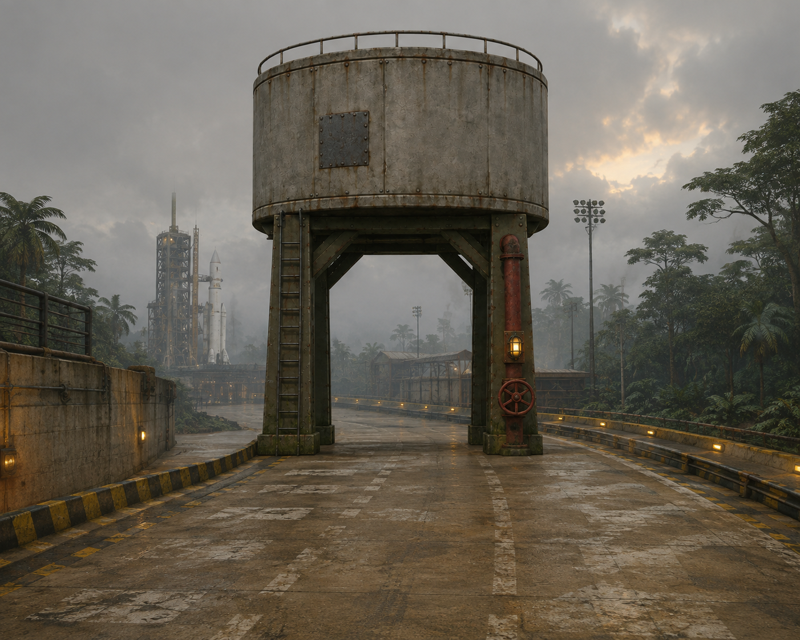
Reference hero
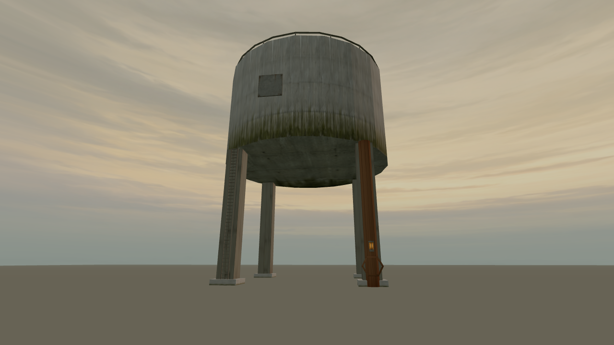
Authored model · shared dawn lighting and fog · camera height 2.4 m
single squat reservoir
four olive legs
outlet with red valve
ladder
repair plate and caged lamp
needs revision: Leg bracing and material weathering are weaker than the hero. Reservoir is too vertically streaked.
Propellant Tank
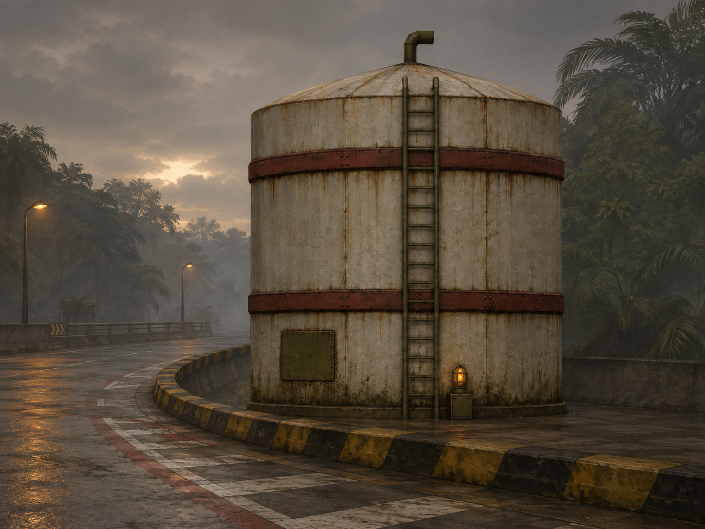
Reference heroAuthored model · shared dawn lighting and fog · camera height 2.4 m
two rust bands
shallow roof
bent roof vent
ladder
repair plate and caged lamp
needs revision: Roof and bent vent are not legible from this capture; atlas mapping stretches vertically.
Vent Stack
Reference heroAuthored model · shared dawn lighting and fog · camera height 2.4 m
bent exhaust elbow
two collars
concrete plinth
maintenance platform
ladder and cage lamp
needs revision: Repair wear is weak and the elbow's open mouth is not legible from this angle.
Crawlerway Gravel Bed
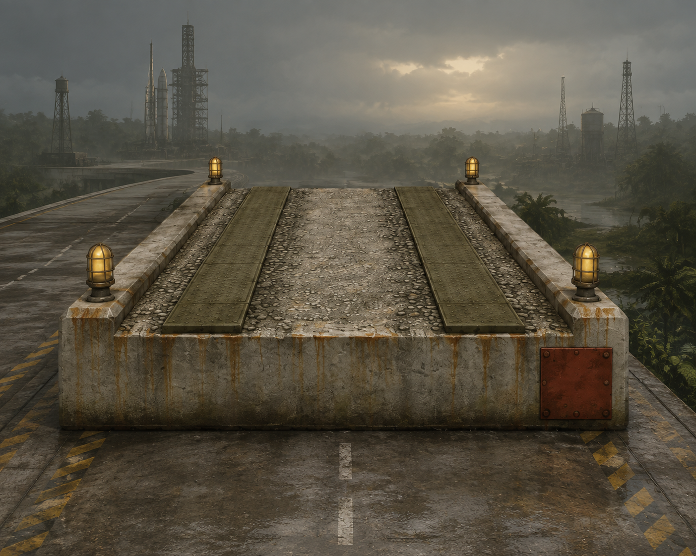
Reference heroAuthored model · shared dawn lighting and fog · camera height 2.4 m
two steel tread strips
rough concrete gravel median
two raised curbs
four cage lamps
corner repair plate
needs revision: Chase-height capture makes the bed too thin and does not establish gravel detail fidelity.
Mangrove Pier
Reference heroAuthored model · shared dawn lighting and fog · camera height 2.4 m
four algae-stained piles
low deck
two safety rails
maintenance ladder
two cage lamps and repair plate
needs revision: Maintenance ladder is hidden from this angle; source hero puts the pier overhead while its intended use is a road deck. Placement and silhouette acceptance remain separate.
Egret Card Set
Reference hero
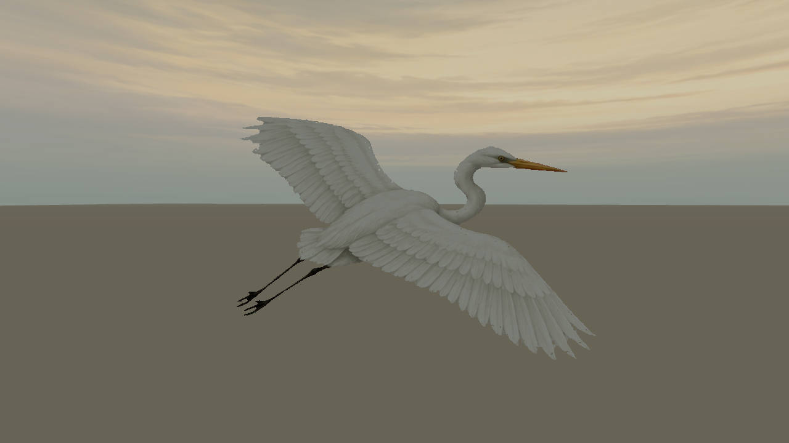
Authored model · shared dawn lighting and fog · camera height 2.4 m
folded S-curved neck
yellow tapered beak
two black trailing legs
white feathered wings
slender white body
five details observed; motion acceptance pending: One static keyed card pose; rising and scattering animation belongs to the event phase. No independent reviewer.
Service Tower Swing Arm
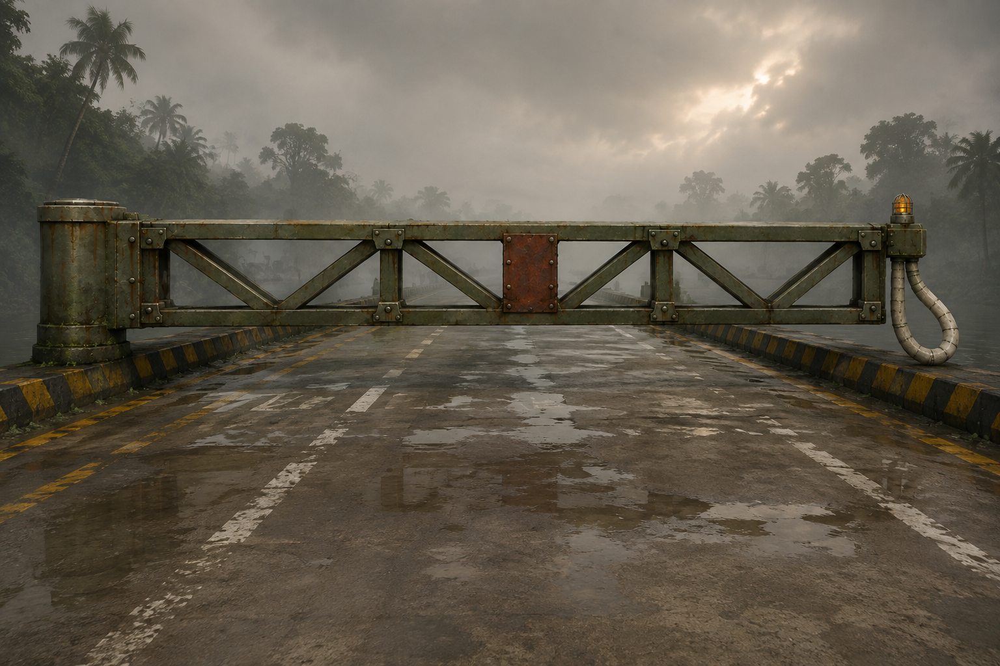
Reference heroAuthored model · shared dawn lighting and fog · camera height 2.4 m
three truss bays per side
hinge cylinder
umbilical loop
central repair plate
caged glass lamp
needs revision: Loop reads angular and thin; central plate and truss proportions differ from the hero.